释迦牟尼的故事
|
兰毗尼花园(今尼泊尔境内)。释迦牟尼的诞生地。离此地西边14公里就是释迦族的古都迦毗罗卫城(现已不存任何建筑物。近年考古证明该地为迦毗罗卫城的遗址)。图上的白色建筑物是为纪念释迦牟尼的母亲摩耶王后而建的“摩耶堂”。堂右侧枝叶茂盛的无忧树，传说摩耶王后就是抚该树枝动了胎气生下了释迦牟尼。堂前的水池，传说摩耶王后产前和生下的太子都曾在池中沐浴。
二千五百多年前，在古印度的西北部，喜玛拉雅山脚下，有个叫迦毗罗卫(今尼泊尔境内)的王国。这里山上生长着茂密的森林，平原盛产稻米，草原适合畜牧业，是个美丽富饶的地方。 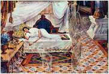 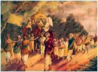 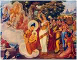 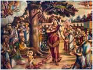 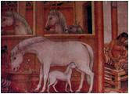 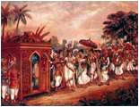 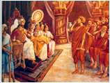 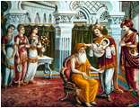 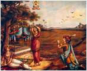 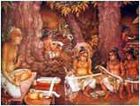 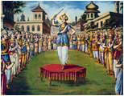 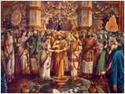 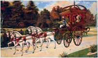 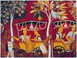 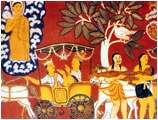 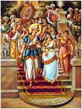 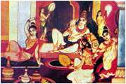 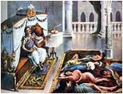 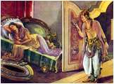 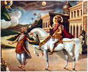 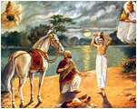 |
|
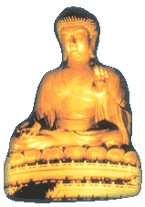 悉达多太子出家后，先到了跋伽仙人的苦行林，那里的修行者有的披着草衣，有的身着树皮，或躺在泥土里，或卧在荆棘上，以种种苦行折磨肉体，以求得精神的解脱。悉达多不满意这种做法，滞留一宿便离去了。 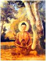 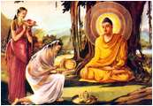 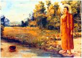 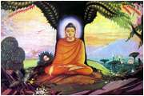 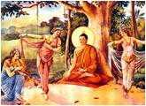 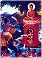 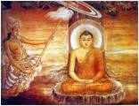 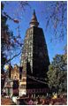 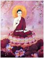 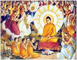 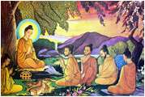 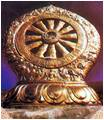 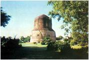 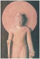 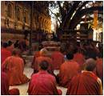 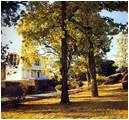 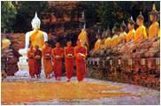 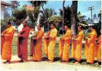 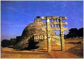 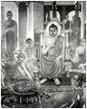 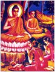 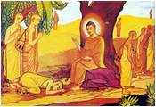 |
释迦牟尼在走向伽耶山途中，经过一座树林时他坐下来休息，这时他看见一个年轻的女人拿着一个很大的包裹从他面前匆匆走过。不久，树林中走出来30个精壮的男人。看这些人的举止和所佩带的．刀剑，都是些王公大臣和富豪的子弟。他们看见在树下休息的佛陀，就询问佛陀见到一个拿包袱的女子没有。佛陀问为何找这女子，这些男人说女子是他们找来的妓女，这妓女哄骗了他们，把他们的衣物都偷走了。佛陀说：找东西重要还是找回你们自己重要?快找回你们自己的身心吧!佛陀的这一句话，使这些公子哥猛醒。佛陀又为他们讲解四圣谛的苦集灭道，使他们都皈依了佛陀，成为比丘。
摩竭陀国的国王频婆娑罗听到悉达多太子修道成为佛陀，亲领千名弟子光临他的国土，并有言在前，太子证悟之后就来救度他，所以非常高兴，带领群臣和眷属，恭迎到首都王舍城城外。请佛陀向全国臣民说法，佛陀在王舍城系统地讲解了“诸行无常、诸法无我、涅磐寂静”三法印。频婆娑罗王和一切听众听从佛法的感召，顿开愚痴，内心清凉。从此，摩竭陀全国奉行佛教，许多人皈依佛陀。
在王舍城南面，有一座雄伟的山峰耸入云霄，这就是著名的灵鹭山。山上有许多天然石窟，十分幽静。释迦牟尼更喜欢居住在灵鹭山中的石窟里，与弟子们在此修行说法。频婆娑罗王也曾多次来到灵鹭山向佛陀请教。
离王舍城不远的摩诃沙罗陀村里，有一位大富豪名叫大迦叶(又名摩诃迦叶、迦叶尊者)，他聪明博学，是婆罗门种姓中最受人尊敬的杰出人物。佛陀在王舍城的竹林精舍说法，声名威震，皈依者如云。起初，大迦叶对佛陀是持怀疑态度的，他为探明究竟，每次都去听佛陀说法。佛陀的德慧和佛法的感召渐渐地打动了大迦叶的心。有一天，大迦叶听完佛陀讲法后，在归家的路上经过多子塔时，看见佛陀正静坐在塔边的大树下。佛陀的肃静和威严，使大迦叶肃然起敬，他终于拜倒在佛陀面前，请求收他为佛弟子。佛陀对大迦叶说：我知道你会成为我的弟子的，你跟我来吧，未来佛法的流传，很需要你啊!大迦叶重视苦行，少欲知足，因此有“头陀(苦行)第一”的称号。
释迦牟尼彻底觉悟成为佛陀以来，首先在鹿野苑初转法轮，收乔陈如等5人为弟子后，大约在4年的时间里，相继皈依佛陀成为比丘的，已形成2250人的庞大的教团组织。佛经中常见的“干二百五十人俱，皆是大阿罗汉”就是指的这时僧团的规模。
在释迦牟尼成佛后的第五年，拘萨罗国首都舍卫城的一位富商，名叫须达多(由于他乐意救济贫穷孤独的人，人称“给孤独”)，他来到王舍城的竹林精舍拜访佛陀，请求赐教。佛陀对须达多讲解道：救济贫苦孤独者是可贵的德行。但布施只是祈求人天福报，那还是追求“我所有”的欲念，是不会久常的。施财是一种善行，法施(以佛法劝人行善)更是大善，还有无畏施，就是不顾自己安危去解救他人，才是伟大的德行。同时又进一步讲解了宇宙间没有什么天神控制世界，一切善恶都是因缘而生，是自己的行为所致的道理。须达多听完佛陀教诲，深受启发，下决心要在舍卫城建造一座精舍，请佛陀到拘萨罗国去为众生说法。
释迦牟尼的父亲净饭王听说自己的儿子修行成佛陀，在邻国舍卫城祗园精舍说法，就派使者请佛陀回国一行，一是想念儿子，二是请佛陀为迦毗罗城的民众说法。佛陀应父亲的召唤回祖国省亲。当他见到离别1O多年的父亲时说，我给父亲带来的礼物只有佛法，我就以佛法报答父亲的养育之恩。佛陀在迦毗罗城说法，王亲贵族和平民都来聆听，受到佛法的启迪，许多人皈依了佛门，佛教在佛陀的故乡风行。
佛陀这次回故乡只住了7天，便辞别父亲返回王舍城的竹林精舍宣传佛法。
释迦牟尼的父亲在93岁的高龄时逝世了。佛陀亲自抬棺把父亲火葬了。净饭王逝世后，曾经抚育过佛陀的姨母摩诃波舍波提夫人，带领500释迦族中的妇女，要求佛陀给她们受具足戒，依照正法出家修行。按照当时各沙门的惯例，妇女只允许在家学道，所以佛陀也不收女弟子。但摩诃波舍波提夫人自己把头发剃去，披起袈裟，跪在精舍门外不起。佛陀提出，妇女参加僧团出家，除了遵守一般戒律外，又增加了八条更加严厉的戒规。摩诃波舍波提夫人都欣然接受了。于是波舍波提夫人成为第一个出家的女弟子——比丘尼。“尼”是梵语中的女声。因
此汉语俗称比丘尼为“尼姑”。不久，佛陀的妻子耶输陀罗妃子也加入波舍波提夫人的比丘尼僧团出家了。
由于佛陀的儿子罗侯罗出家，佛陀的姨母摩诃婆舍波提夫人率释迦族500妇女出家，这时的佛教僧团就有了七众弟子：①比丘(20岁以上出家男子)；②比丘尼(20岁以上出家女子)；③沙弥(20岁以下出家男子)；④沙弥尼(18岁以下出家女子)；⑤式叉摩那(这是为曾经结过婚的妇女设置戒条。因为有的妇女不知自己受孕，出家后生了孩子，招致俗人诽谤，所以结过婚的妇女要先接受为期两年的式叉摩那戒，两年后再受比丘尼戒)。以上为出家五众。⑥在家男众称优婆塞(男居士)；⑦在家女众称优婆夷(女居士)。合称为七众弟子。
释迦牟尼曾教诫最初的60位弟子说：“应为众生利益游行化教”。这就明确规定了佛教僧伽的生活方式是游行乞食，化教四方众生，是没有固定居所的。但印度每年从6月中旬以后的3个月，降雨量很大，河川泛滥，僧尼游行困难，佛教还认为雨季行走易伤草木小虫，应定居一处，坐禅修学，接受供养，这期间称为安居期。佛陀说法的“竹林精舍”和“祗园精舍”，就是为雨季安居和集会的需要，才建立的场所。久之，按照3个月集体生活的需要，开始制定出佛教原始的一些宗教仪式和僧团制度。雨季安居的住所逐渐成为永久居住的僧院(寺院)，也
是为适应僧伽举行宗教集会、禅定或讨论佛法的需要而形成的。
释迦牟尼传教的对象，包括当时社会的各种姓和各阶层。有婆罗门、沙门(各道门的人员)、国王、大臣、商人、手工业者、渔民以至妓女、盗贼等。在传教方式上，随机施设，不拘一格。他用倡颂、散文、故事、譬喻、直叙、问答等各种形式，在不同的场合，针对不同的对象，宣讲不同的内容。对僧众谈论出离生死，证得无上正觉，对俗人谈论道德和行善。佛陀允许弟子可不用规范化的梵语，而用地区方言进行说教，这就使得他的思想学说在社会上得到广泛的传播。 将“祗园精舍”赠给佛陀的富商须达多，他最小的一个儿子的妻子玉耶，是全国最美的美女，玉耶以自己的美貌骄气十足、盛气凌人、不孝父母、不睦家人。须达多请佛陀教导玉耶。佛陀带着一个比玉耶还要美丽的美女，亲自到须达多家中对玉耶说法。玉耶在佛陀面前听讲时，亲眼看到佛陀带来的美女渐渐变老，又由老而变成一架白骨。玉耶觉悟出人的美貌是不会长久的，最终是要变为可怕的骷髅。玉耶从此觉悟，皈依佛陀，成为在家修行的优婆夷。 |